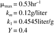
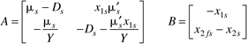
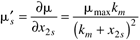

| [ Team LiB ] |
|
M7.2 Steady-State and Dynamic BehaviorWe use the following parameters for a substrate inhibition model for this control study:  The steady-state dilution rate is Ds = 0.3 hr-1 (and the residence time is 3.33 hours) and the feed substrate concentration is x2fs = 4.0 g/liter. Steady-State ConditionsThe nonlinear process has the following three steady-state solutions (operating points) to Equation M7.1 for a dilution rate of 0.3 hr-1:
Notice that we definitely do not want to operate a equilibrium point 1. Here there is no reaction occurring because the cells have been washed out of the reactor. The outlet substrate concentration is the same as the inlet substrate concentration under these conditions. Linear ModelThe state-space model matrices are  where the partial derivative of the specific growth rate with respect to the substrate concentration is  and where dilution rate is the manipulated input. Different control strategies have been used to control continuous biochemical reactors. One is based on measuring the biomass concentration and manipulating the dilution rate. Another is based on measuring the substrate concentration and manipulating the dilution rate. In the following two problems, the biomass concentration is the measured output and the dilution rate is the manipulated input. You will be performing your control simulations using the nonlinear process, so the inputs and outputs from the process are in physical variable form, while the linear controller design is based on the use of deviation variables. Assume that the dilution rate is physically constrained between 0 and 0.6 hr-1. | ||||||||||||||||
| [ Team LiB ] |
|